Python Coding in Emacs
Table of Contents
1 About this slides
- Is an HTML slides. To view it in slides mode,
- Press
xto enter "slides mode". - Click mouse for next page.
- Press
?for more help.
- Press
- Showcases what facilities Emacs provides with regard to Python coding.
- Give defails on how to set up demonstrated features at the end.
- Refer to https://www.emacswiki.org/emacs/PythonProgrammingInEmacs for more on this topic
2 Online manual
- Install command line tool "pydoc" if not alread.
- Install from melpa using
M-x pack-install<enter>pydoc<enter>(or download & install it manually from https://github.com/statmobile/pydoc). M-x pydoc<enter>to serch for doc.
3 Cross reference
- Go to definitions
- Jedi: it is very convenient if all you want is going to definitions.
- Imenu: if "jedi" is not available, "imenu" (
F2according to my configure) helps you jump to definitions within the current buffer.
- cscope: Actually, "cscope" supports Python. Therefore, if you are already using cscope, you need no extra configure.
- pycscope: "pycscope" is supposed to be a little bit more accurate than cscope because it "uses Python's own parser and (C)oncrete (S)yntax (T)ree". Simply build the database with "pycscope" (set "cscope-program" to "pycscope").
4 Lint
"pylint" helps to find out programming errors as well as offenses of
coding style. For explanations of "pylint" messages, refer to
http://pylint-messages.wikidot.com/. For my pylint configure
(~/.pylintrc), refer to ../util/lgfang.pylintrc.
After installing pylint, we can either:
4.1 Fly check
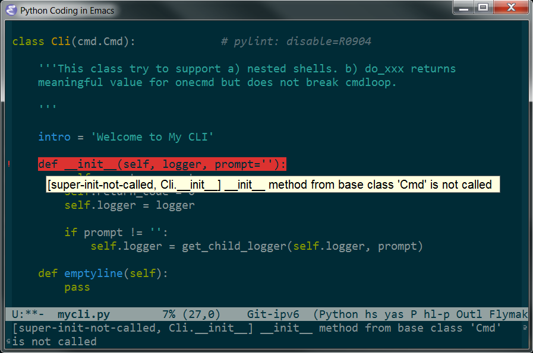
If fly check enabled, problematic lines should be highlighted "automatically". Moving cursor to those lines, corresponding error messages should show up in the mini buffer (echo area)
No surprise that, if you are running a GUI version of Emacs, hovering the pointer on a line will trigger a balloon tip.
4.2 Check on demand
Another way is to manually do the check via M-x pylint.
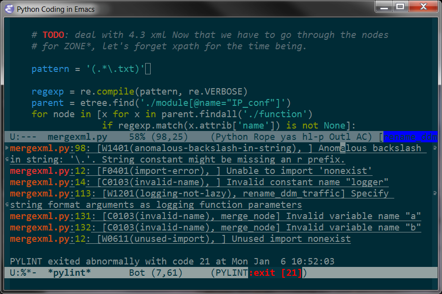
5 Code assistant
I recommand "jedi" (installing jedi) instead of "ropemacs", which places more emphasis on refactoring.
5.1 List of possible completion
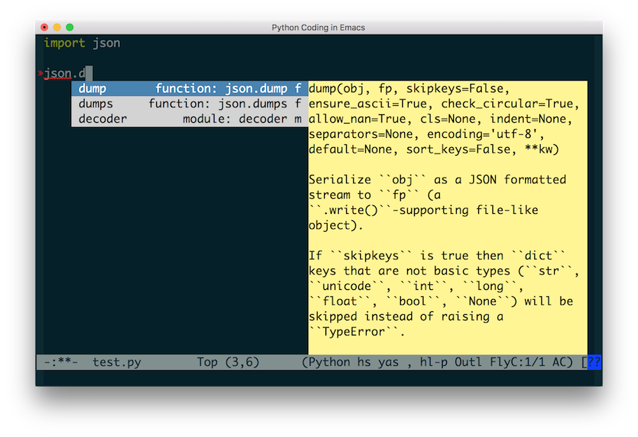
5.2 Call signature help
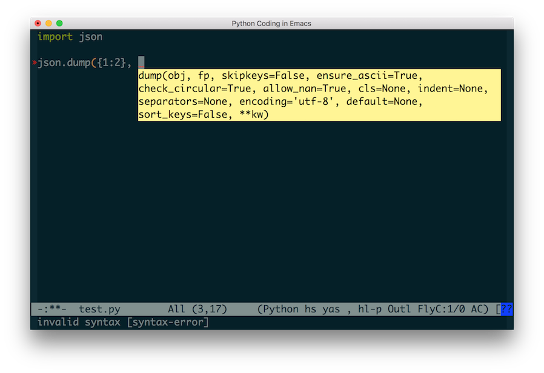
6 Unit Test
Thanks to the graceful design of Emacs, unit test is supported without any
extra work, just use the M-x compile and M-x recompile. They work like a
charm.
6.1 Launch unitest command
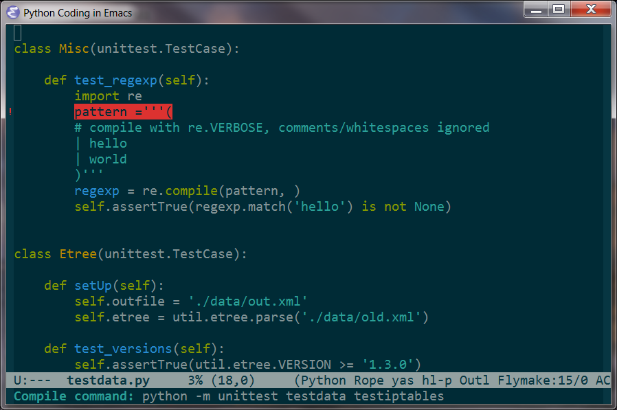
6.2 Get the result
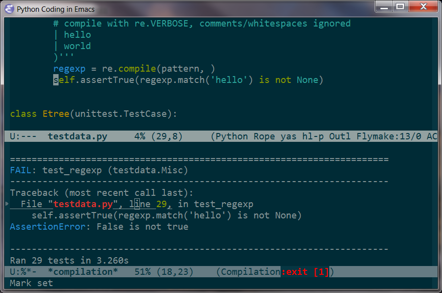
6.3 To set default compile command for python
(setq compile-command "python -m unittest ")
7 Refactoring
7.1 Load ropemacs
M-x load-ropemacs
I rarely need this, therefore, by default I don't enable "ropemacs" by default. Refer to configuring "ropemacs".
7.2 Init the "project"
For a new project, you need to confirm "project" info first.
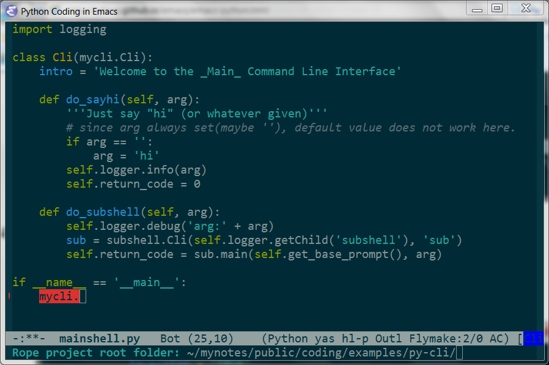
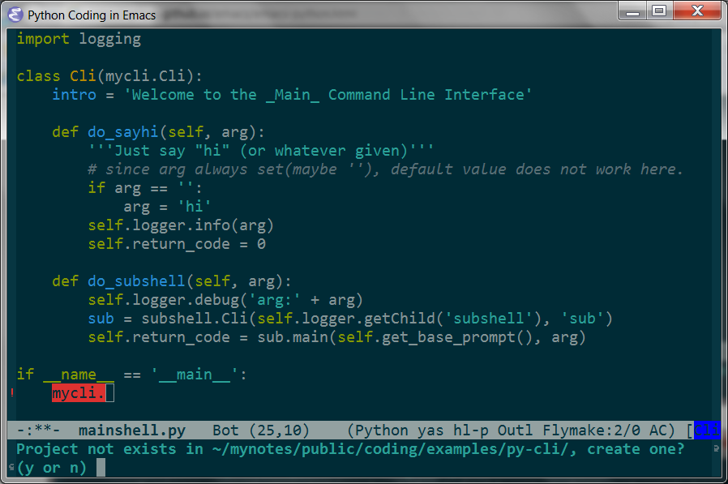
7.3 rope-rename
7.3.1 Suppose pylint complained an invalid name
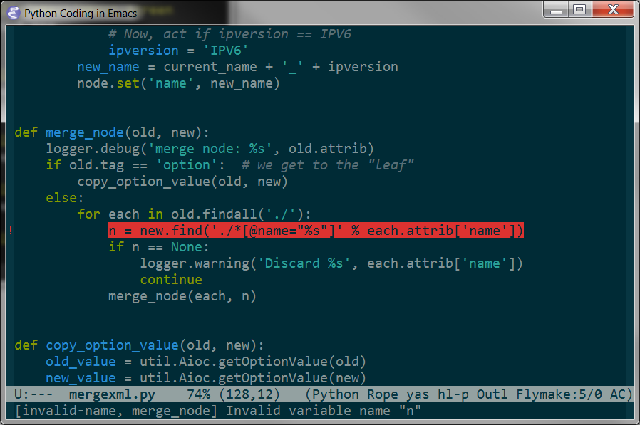
7.3.2 With point on that variable, M-x rope-rename (or C-c r r)
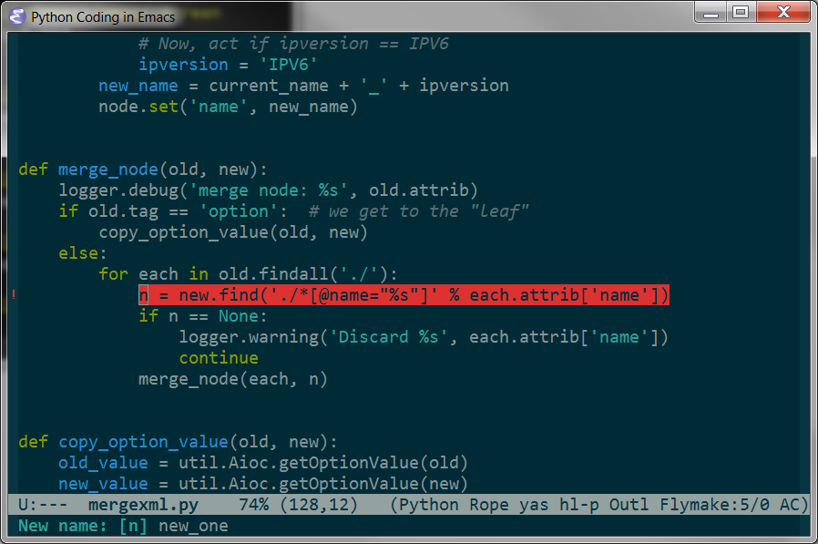
7.3.3 And press "<enter>"
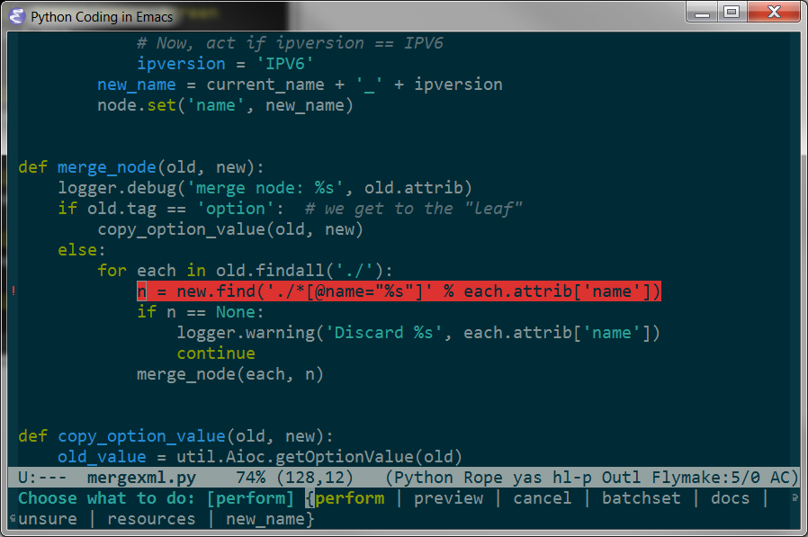
7.4 And more
Once again, if you prefer the GUI version of emacs, there is a menu for you.
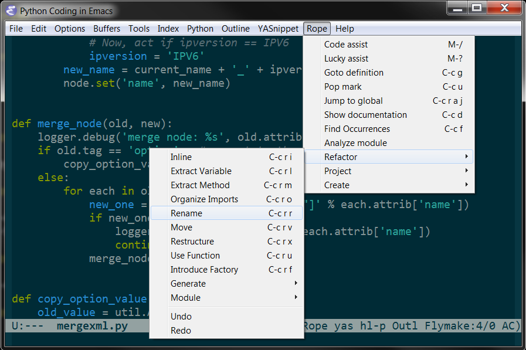
8 Re-format code with PythonTidy
"pylint" is good to constantly push you to follow certain code style (say PEP8). But, for existing code not following the style, you may want an automated tool to re-format the scripts for you. PythonTidy is one of those.
*Install PythonTidy and then, when needed, run M-x
lgfang-python-tidy upon a buffer or a region.
NOTE:
- IMHO, it is far from perfect.
- You can change shebang by modifing corresponding line in pythontidy. For
instance, one may want to modify it this way:
SHEBANG = '#!/bin/env python'
9 Configuration
For more comprehensive and complete configuration, please refer to my "init.el".
9.1 Cscope
(add-hook 'python-mode-hook (function cscope:hook))
9.2 Pylint
9.2.1 Download
Pylint and its dependencies (Note that the versions change with time).
- logilab-common-0.60.1 :: http://www.logilab.org/848
- pylint-1.1.0.tar.gz :: https://pypi.python.org/pypi/pylint
- astroid-1.0.1.tar.gz :: https://pypi.python.org/pypi/astroid
9.2.2 Install pylint
For each package, untar and run python setup.py install.
NOTE: If you are to install these packages locally on a Linux box, run the following command instead:
mkdir -p $HOME/.local/lib/python2.7/site-packages python setup.py install --prefix=$HOME/.local/
9.2.3 Install elisp
In the untar-ed directory, there is sub-directory elisp. Copy the
pylint.el and pylint-flymake.el to /usr/share/emacs/site-lisp/
(or whatever path you like so long as it is in your load-path ).
Put the following lines into your init.el.
(load "pylint" t nil nil) (load "pylint-flymake" t nil nil) ;; From http://docs.pylint.org/ide-integration (defun show-fly-err-at-point () "If the cursor is sitting on a flymake error, display the message in the minibuffer" (require 'cl) (interactive) (let ((line-no (line-number-at-pos))) (dolist (elem flymake-err-info) (if (eq (car elem) line-no) (let ((err (car (second elem)))) (message "%s" (flymake-ler-text err))))))) (add-hook 'post-command-hook 'show-fly-err-at-point)
9.2.4 Hot keys
Do not forget to bind hot keys for flymake if you have not yet:
(define-key global-map (kbd "C-c p") 'flymake-goto-prev-error) (define-key global-map (kbd "C-c n") 'flymake-goto-prev-error) (define-key global-map (kbd "C-c m") 'flymake-display-err-menu-for-current-line)
9.2.5 The "flycheck"
At the time of this writing, a package named "flycheck" seems to be superior to the built-in flymake. Hence, I recommend you use that if possible. It requires no explicit configuration: just install pylint and flycheck, then it works out of box.
9.3 Jedi
- Install "virtualenv" via "pip"
sudo pip install virtualenv
- Install "jedi" using "package"
M-x package-install RET jedi RET
- Install jedi server from within emacs
M-x jedi:install-server RET
- Add the following to
init.el(when (functionp 'jedi:setup) (add-hook 'python-mode-hook 'jedi:setup) (setq jedi:complete-on-dot t))
9.4 Ropemacs
9.4.1 Install
- Download
- Install
#* Pymacs cd ~/Downloads/Pymacs-master make check # Check if pymacs would work sudo make install # Install python part # to verify the installation python -c 'import Pymacs' sudo cp pymacs.el /usr/local/share/emacs/site-lisp/ # emacs part #* Rope and Ropemode sudo pip install rope ropemode #* Ropemacs cd ~/Downloads/ropemacs-master/ sudo python setup.py install
9.4.2 Configure Emacs
;;; ropemacs and pymacs (setq ropemacs-enable-shortcuts t ropemacs-global-prefix nil ; the default one already used ropemacs-guess-project t ropemacs-confirm-saving 'nil) (autoload 'pymacs-apply "pymacs") (autoload 'pymacs-call "pymacs") (autoload 'pymacs-eval "pymacs" nil t) (autoload 'pymacs-exec "pymacs" nil t) (autoload 'pymacs-load "pymacs" nil t) (autoload 'pymacs-autoload "pymacs") (defun load-ropemacs () (interactive) (when (and (require 'pymacs nil t) (pymacs-load "ropemacs" "rope-" t)) ;; (ac-ropemacs-setup) ; this does not work? (define-key python-mode-map (kbd "M-/") 'rope-code-assist)))
Since I do not really need heavy weight tool for trivial scripts, I
did not add load-ropemacs to python-mode-hook.
9.4.3 Verify pymacs
- In a "clean" directory, open a python file.
M-x load-ropemacs- Verify if Pymacs works
M-x pymacs-eval <ret> 2 * 3 <ret>
9.5 Install PythonTidy
- Download PythonTidy
From https://pypi.python.org/pypi/PythonTidy and put it somewhere in your "PATH" and rename it as "PythonTidy.py".
- Put the following in your
init.el;; Download PythonTidy and put it into PATH as "pythontidy" (defun lgfang-python-tidy () (interactive) (if (not (string= mode-name "Python")) (message "Buffer not is python mode") (let ((beg (if (region-active-p) (region-beginning) (point-min))) (end (if (region-active-p) (region-end) (point-max)))) (save-excursion (shell-command-on-region beg end "pythontidy" nil t)))))